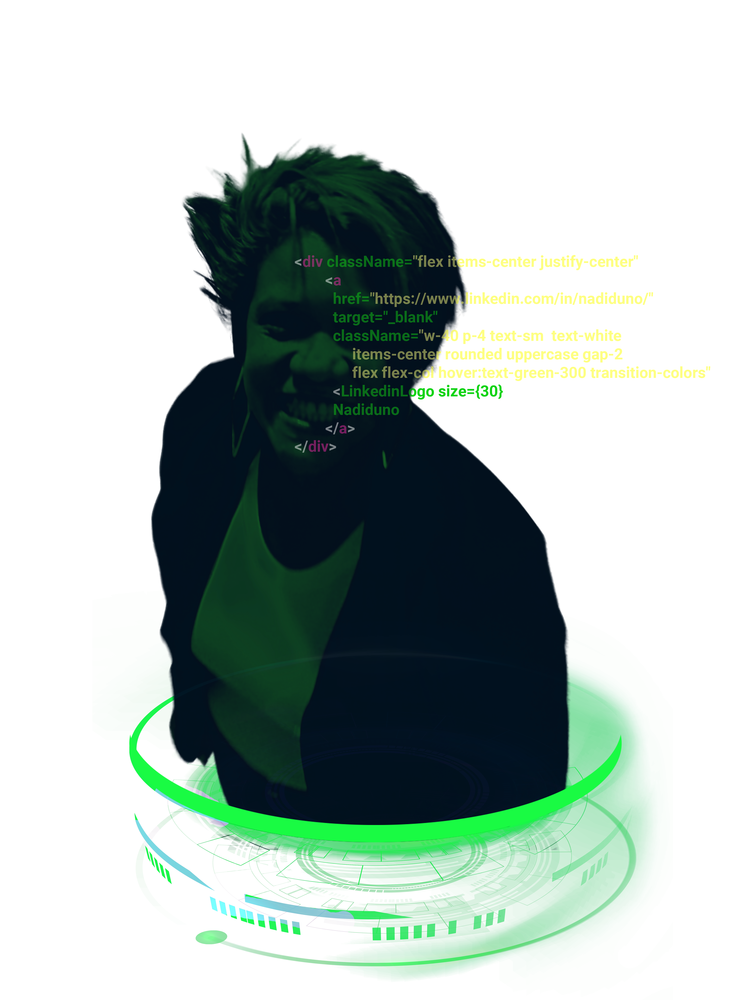

I´m Nadi
a web designer
devRel
Connecting people through education and technology

CSS HTML JavaScript font-weight:Ps91 color:black background-color:red opacity: 23
<coder/>
Developing website using usability metrics
Check my repositories on github
: